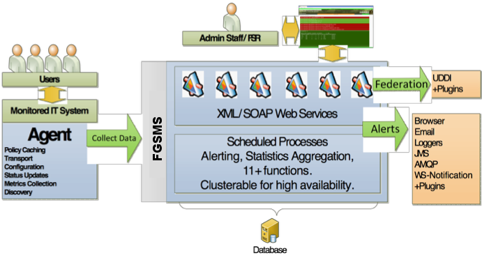

FGSMS is designed to be a scalable solution in order to meet the needs of most organizations that practice SOA methodologies for web service development. This capability is implemented as a SQL Database, a set of web services, a user GUI, and administrative tools. The following figure describes the dependencies of FGSMS and the service/UI interactions. Coincidently, this is also the order for installing and configuring FGSMS.

At the heart of FGSMS are 3 PostgreSQL databases that need to be accessible from all of the FGSMS web services and scheduled processes. The default database names are fgsms-performance, fgsms-config and fgsms-quartz. A script is included to generate the databases, schemas, and tables. At least one username is required , but multiple users can be used, so long as they have select/update/delete/insert rights to both databases.
Database mirroring/failover is supported by all FGSMS Components.
Currently, FGSMS provides a pre-configured Apache Tomcat web application server. This server is the central location for data collection, storage, processing, alerting, statistics and much more. See Setting the server for more information. It can scale, meaning you can have multiple instances pointed at the same database cluster. The UI is separate from the services for more scaling options. The UI and all agents support failover capabilities too.
FGSMS is based on a service oriented architecture, the real service stuff, not the diet soda kind. SOAP services (although there are some REST like services too). Access to all information in the FGSMS system is via web services. FGSMS comes with six core web services.
The Data Collector Service (DCS) serves as the primary data collection point for FGSMS. All monitored services issue requests to the DCS via agents which are subsequently stored in the performance database. The DCS is also responsible for perform transactional service level agreement processing and alerting.
Architectural Note: At a minimum, each FGSMS deployment should have at least one DCS. As your operational needs and throughput increases, adding additional DCS’s is recommended. All that is need is connectivity to the same database server.
The Policy Configuration Service (PCS) serves as the primary access point for the configuration of monitored services, user permissions, publication information, and service level agreements. The PCS is also used by agents to obtain the most recent service policy and is used by the Web GUI or administrative tools to change service policies.
The Data Access Service (DAS) serves as the primary data access point for FGSM. It is used extensively by the Web GUI for rendering all charts and graphs.
Architectural Note: The DAS is a requirement for the Web GUI.
Customization Tip: If you wish to build your own GUI, start with this service.
The Status Service (SS) serves as an access point getting and setting the current operating status of a service.
The Reporting Service (RS) generates a zipped HTML containing a set of reports for a given set of services over a given period of time. These reports can further be customized via style sheets and html files.
Architectural Note: The Reporting Service is not a requirement for the monitoring of web services. It is required for the report generator feature of the Web GUI to function. It can also be used outside of the Web GUI.
The Automated Reporting Service (ARS) works hand in hand with the RS and a scheduler to enable users to schedule reports to be automatically generated at specific intervals.
Architectural Note: The ARS is technically an optional feature and isn’t required for the basic operation.
FGSMS needs a few other things to keep it going which are briefly discussed here.
FGSMS has a few functions that are executed on a periodic basis, performing the following functions: Data Pruning, this will remove stale or expired data based on retention policies.
It is designed to run with Quartz and should run a variety of different application servers. All configuration settings for these processes are centrally configured in the database.
FGSMS collects data through agents. The agent’s role is to perform a variety of tasks on behalf of the FGSMS server, usually when running on a different JVM or computer. The most common thing agents do is collect data, usually performance or availability information, and report it back to the server. FGSMS comes with a wide variety of agents which handle different types of products, components and types of data. Additional agents can be created using the one of the mentioned agents’ source code. See the FGSMS SDK section for more information.
Architectural Note: At a minimum, at least one agent should be deployed within your operational environment. Everything that you want to monitor needs to either have agent deployed within that container, system or deployment or each service would need to implement their own reporting mechanism (see extending FGSMS for details). Agent installation and scope is specific to each technology platform. See installation guide for details.